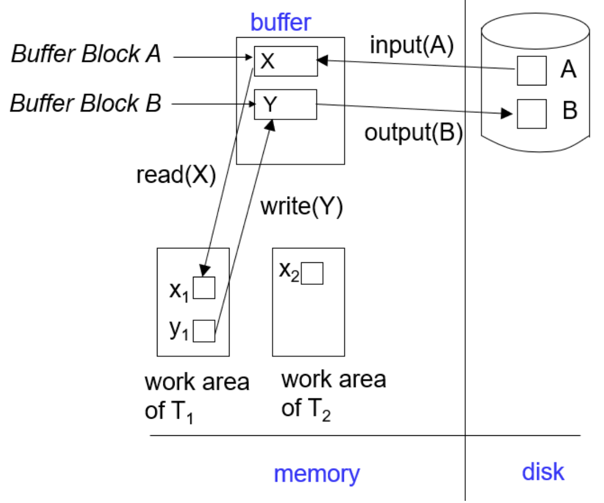
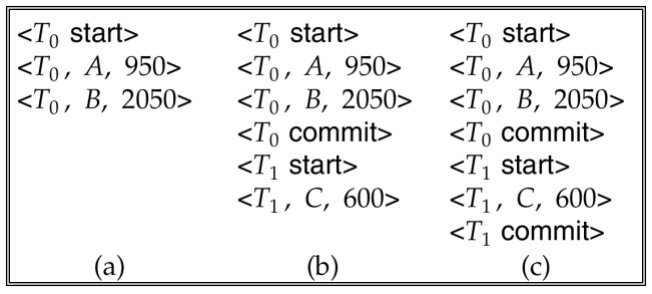
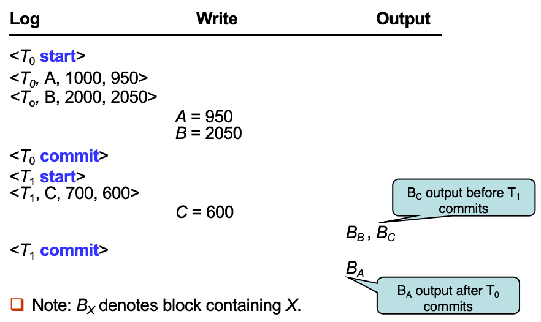
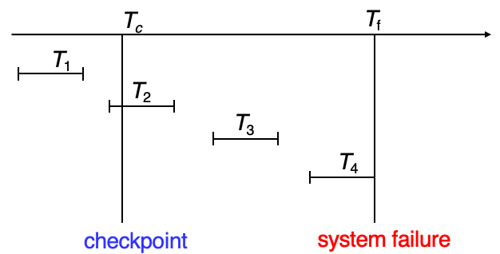
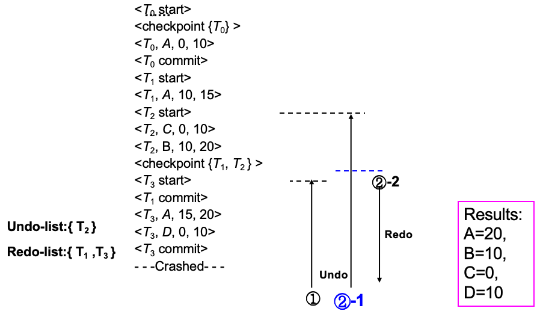
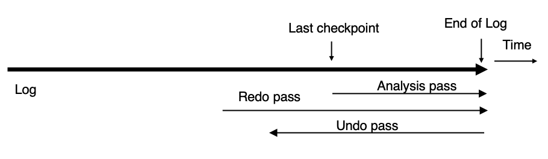

故障恢复¶
故障分类¶
- 事务故障（Transaction Failure）
- 逻辑错误（Logical Errors）：由于某些内部错误条件，事务无法完成执行，例如：溢出（overflow）、错误输入（bad input）、数据不存在（data not found）等
- 系统错误（System Errors）：由于错误条件（例如死锁），数据库系统必须终止一个正在执行的事务
-
系统崩溃（System Crash）：电源故障或其他硬件、软件故障导致系统崩溃
失效停止假设（Fail-stop Assumption）
假设非易失性存储中的内容不会因系统崩溃而损坏。
数据库系统具有大量完整性检查机制，以防止磁盘数据损坏。
-
磁盘故障（Disk Failure）
- 磁头损坏或类似的磁盘故障会破坏全部或部分磁盘存储内容
- 假设这种破坏是可检测的：磁盘驱动器使用校验和（checksums）来检测故障
恢复算法
恢复算法包含两个部分：
- 在正常事务处理期间采取的措施：以确保存在足够的信息用于故障恢复
- 在故障发生后采取的措施：将数据库恢复到满足原子性（Atomicity）、一致性（Consistency）和持久性（Durability）的状态
* 存储结构¶
- Stable storage（稳定存储）：一种理论上的存储形式，能抵御所有故障
- 实现：可通过在不同非易失性介质上维护多份副本来实现近似
WARNING：数据传输过程中发生故障仍可能导致副本不一致
防止数据传输过程中存储介质故障的一种方案：（假设每个块有两个副本）：
- 将信息写入第一个物理块
- 当第一次写入成功完成后，再将相同的信息写入第二个物理块
- 只有当第二次写入也成功完成后，输出操作才算完成
从故障中恢复的方法：
- 首先找出不一致的块
- 代价较高的方法：比较每个磁盘块的两个副本
- 更好的方法：
- 在非易失性存储（非易失性 RAM 或磁盘的专用区域）中记录正在进行的磁盘写操作
- 恢复时利用这些信息找出可能不一致的块，仅比较这些块的副本
- 该方法用于硬件 RAID 系统
- 修复不一致的块：
- 如果发现某个不一致块的任一副本存在错误（校验和错误），则用另一个副本覆盖它
- 如果两个副本都没有错误，但内容不同，则用第一个块覆盖第二个块
数据访问¶

- 物理块（Physical Blocks）是驻留在磁盘上的块
- 缓冲块（Buffer Blocks）是暂时驻留在主存中的块
- 磁盘与主存之间的块移动通过以下两个操作完成：
- input(B)：将物理块 B 从磁盘传输到主存
- output(B)：将缓冲块 B 从主存传输到磁盘，并替换磁盘上对应的物理块
- 每个事务 Ti 都有自己的私有工作区（private work-area），其中保存该事务访问和更新的所有数据项的本地副本
- 数据项 X 在事务 Ti 中的本地副本称为 xi
-
系统缓冲区块与事务私有工作区之间的数据传输通过以下操作完成：
- read(X)：将数据项 X 的值赋给本地变量 xi
- write(X)：将本地变量 xi 的值写入缓冲区块中的数据项 X
TIPs
- output(BX) 不一定要紧跟在 write(X) 之后执行，系统可以在认为合适的时候再执行 output 操作
- 事务规则：
- 第一次访问数据项 (X) 时，必须先执行 read(X)（之后再次读取时，可以直接从本地副本读取）
- write(X) 可以在事务提交（commit）之前的任意时刻执行
* 恢复与原子性
为确保在故障情况下的原子性，首先将描述修改内容的信息输出到稳定存储，而不修改数据库本身
- 基于日志的恢复机制
- 使用较少的替代方法：影子分页
基于日志的恢复¶
- 日志保存在稳定存储（stable storage）中，是一系列日志记录组成的序列，用于记录数据库上的更新活动
- 日志记录
- 当事务 Ti 开始时，会写入一条日志记录来登记自身：<Ti start>
- 在 Ti 执行 write(X) 之前，必须先写入一条日志记录：<Ti, X, V1, V2>
- 其中：V1 是写入前 X 的值（旧值），V2 是将要写入 X 的值（新值）
- 当 Ti 执行完最后一条语句时，会写入日志记录：<Ti commit>
- 当 Ti 完成回滚时，会写入日志记录：<Ti abort>
- 使用日志的两种恢复方法：
- 延迟数据库修改（Deferred Database Modification）
- 立即数据库修改（Immediate Database Modification）
延迟数据库修改¶
- 方案：将所有修改记录到日志中，但把所有实际写数据库的操作推迟到部分提交之后执行
- 假设事务串行执行
- 执行 write(X) 时，产生如下日志记录：<Ti, X, V> （该方案中不需要记录旧值）
- 此时不会真正修改 X，而是将写操作延迟执行
- 提交后读取日志记录，并根据日志文件执行之前被延迟的写操作
-
恢复规则：只需要 redo，不需要 undo
- 没有 <Ti commit>，什么都不做
- 有 <Ti commit>，redo(Ti)
Example
三个时刻的日志状态：

(a) 不需要执行任何 redo 操作
(b) 由于存在 <T0 commit> 必须执行 redo(T0)
(c) 由于同时存在 <T1 commit> 和 <T0 commit>，必须先执行 redo(T0) 再执行 redo(T1)
立即数据库修改¶
-
方案：未提交事务的更新在事务提交之前就写入缓冲区，甚至直接写入磁盘
Tips
- 更新日志记录必须先于数据库项写入
- 更新后的数据块可以在提交之前或之后写入稳定存储
- 数据块输出顺序不要求与写入顺序一致
Example

-
恢复过程需要两种操作：
- undo(Ti)：将 Ti 更新过的所有数据恢复为旧值；从 Ti 最后一条日志记录开始向前扫描
- redo(Ti)：将 Ti 更新过的所有数据设置为新值；从 Ti 第一条日志记录开始向后扫描
注意
两种操作都必须满足幂等（Idempotent），即：即使执行多次，效果也与执行一次相同。
原因：恢复过程中可能重复执行。
-
崩溃后的恢复规则
- 需要 Undo：若日志中存在 <Ti start> 但不存在 <Ti commit>
- 需要 Redo：若日志中同时存在 <Ti start> 和 <Ti commit>
- 先做 Undo，再做 Redo
原因
对日志中的所有事务执行 redo 和 undo 会非常慢，引入 checkpoint
原因：系统运行时间越长，日志越大，处理整个日志非常耗时；很多事务的修改实际上已经写入数据库，再次 redo 是不必要的。
- 检查点（checkpoint）：定期执行检查点操作
- 目的：缩短恢复时需要扫描的日志范围
- 执行步骤：
- 将主存中的所有日志记录写入稳定存储
- 将所有已修改缓冲块写入磁盘
- 写入日志记录：<checkpoint L>，其中 L 是检查点时仍然活跃的事务集合
- 执行检查点期间暂停所有更新操作
- 恢复时只需要考虑：
- 最近一次检查点之前开始、但尚未结束的事务
- 检查点之后开始的事务
-
没有提交则 undo；有提交则 redo
Example
T1 忽略；T2 和 T3 Redo；T4 Undo

* 影子分页¶
- 影子分页是基于日志恢复的替代方案，适用于事务串行执行的场景
- 核心思想：在事务生命周期内维护两张页表：
- 当前页表
- 影子页表：保存在非易失性存储中，用于保存事务执行前的数据库状态
- 提交事务时：将当前页表写入磁盘，使当前页表成为新的影子页表
- 磁盘固定位置保存着影子页表指针，只需修改该指针，使其指向当前页表
- 当该指针成功写入后，事务正式提交
- 系统崩溃后：
- 无需恢复过程，新事务可以立即开始，直接使用影子页表
- 任何未被当前页表、影子页表引用的页面，都应该被释放（垃圾回收）
- 优点：相对于日志恢复：
- 不需要写日志记录
- 恢复过程非常简单
- 缺点：
- 复制整个页表代价极高（可以利用 B+ 树结构页表降低开销：无需复制整棵树，只需复制通向被修改叶节点的路径）
- 提交开销仍然很高（刷新所有更新页面/刷新页表）
- 数据容易碎片化，相关页面可能分散在磁盘不同位置
- 每次事务完成后，旧版本页面都需要垃圾回收
- 很难扩展到并发事务（基于日志的恢复机制更容易支持并发）
并发事务恢复¶
并发事务恢复
- 为了支持多个事务并发执行，需要对前面的日志恢复方案进行修改
- 所有事务共享：一个磁盘缓冲区、一个日志文件
- 一个缓冲块中的数据项可能被一个或多个事务更新
- 假设采用严格两阶段锁协议
系统崩溃后的恢复：
- 第一阶段：构建 undo-list = {}、redo-list = {}
- 从日志末尾开始向前扫描，直到找到最近的 <checkpoint L>
- 遇到 <Ti commit> 则 Ti 加入 redo-list
- 遇到 <Ti start> 若 Ti 不在 redo-list 中，Ti 加入 undo-list
- 遇到 <Ti abort> 则 Ti 加入 undo-list
- 对于 L 中每个事务 Ti，若 Ti 不在 redo-list，Ti 加入 undo-list
- 从日志末尾开始向前扫描，直到找到最近的 <checkpoint L>
- 第二阶段：恢复
- 从日志末尾向前扫描，直到 undo-list 中每个事务的 <Ti start> 都被找到
- 扫描过程中对于属于 undo-list 的日志记录，执行 undo
- 找到最近的 <checkpoint L>，从该检查点开始向后扫描，直到日志末尾
- 扫描过程中对于属于 redo-list 的日志记录，执行 redo
Example

缓冲区管理¶
-
日志记录不会立即写入稳定存储，而是先缓存在主存中
Abstract
日志记录在以下情况下被写入稳定存储：
- 日志缓冲区中的日志块已满
- 执行了 log force 操作，例如执行检查点（Checkpoint）时
- transaction commit
-
WAL 规则：数据块写入磁盘前，相关日志必须先写入 stable storage
- 恢复算法同时支持：
- No-force：事务提交时，不要求立即把修改过的数据块写入磁盘
- Steal：未提交事务修改过的脏块，也可以被写入磁盘
- 输出一个 block 到磁盘时，使用 Latch
- 数据库 buffer 可以放在 reserved main memory 或 virtual memory
- 如果放在 virtual memory，可能导致额外 I/O，产生 Dual Paging Problem
- OS 和 DBMS 都在管理页面，造成重复分页和额外磁盘 I/O
非易失性存储丢失时的故障
前面默认磁盘不坏；如果磁盘坏了，需要用 dump / backup
该部分内容详见 PPT
- * 高级恢复技术
- * 远程备份系统（Remote Backup Systems）
* ARIES 恢复算法¶
- ARIES 是目前先进的恢复方法之一，包含大量优化技术：降低正常运行期间的开销；加快恢复速度
- 特点：
- 使用日志序列号（LSN）标识日志记录
- 在数据页中保存 LSN，用于判断哪些更新已经应用到页面
- 使用生理重做（Physiological Redo）
- 使用 Dirty Page Table 避免不必要的 Redo
- 使用模糊检查点（Fuzzy Checkpointing），检查点时不要求把脏页写出
- 生理重做：指重做事务操作时，页面定位使用物理方式（确定哪一页需要修改），而页内具体操作可以用逻辑方式描述（只记录变更的具体操作，而不是整个页面内容）
- 减少日志存储和 I/O 开销，同时保持恢复操作的幂等性和正确性
数据结构¶
- 日志序列号（LSN）用于唯一标识每条日志记录
- 要求：单调递增、顺序编号
- 通常 LSN 是日志文件起始位置的偏移量，便于快速定位日志记录，也容易扩展到多个日志文件
- Page LSN：最近一次已经反映到该页面上的日志记录对应的 LSN
- 作用：恢复时利用 PageLSN 判断某条日志是否已经应用过，从而避免重复 Redo，保证幂等性
- 日志记录
- PrevLSN：同一事务上一条日志记录的 LSN
- 日志结构：
| LSN | TransID | PrevLSN | RedoInfo | UndoInfo | - ARIES 引入特殊日志：补偿日志记录（CLR）
- 用于记录恢复过程中执行的 Undo 操作
- CLR 本身只需要 Redo，永远不需要 Undo
- UndoNextLSN 表示下一条需要继续 Undo 的日志记录
- 结构：
| LSN | TransID | UndoNextLSN | RedoInfo |
- Dirty Page Table：记录缓冲区中已经修改过的页面
- 对于每个脏页保存两个重要信息：
- PageLSN：页面当前的 PageLSN
- RecLSN：某个 page 第一次变脏时对应的日志 LSN
- 当页面第一次进入脏页表时：RecLSN 被设置为当前日志末尾位置
- RecLSN 会被记录到检查点中
- 作用：减少恢复时需要执行的 Redo 工作量
- 对于每个脏页保存两个重要信息：
- 检查点日志
- 检查点日志记录包含：
- Dirty Page Table
- 活动事务列表：
- 所有尚未结束的事务
- LastLSN：该事务最近一条日志记录的 LSN
- 磁盘固定位置保存最近一次完成检查点的 LSN
- 与传统检查点不同，ARIES 在检查点时不写出脏页，脏页由后台持续刷新，因此检查点代价非常低，可以频繁执行检查点
- 检查点日志记录包含：
恢复算法¶
ARIES 恢复包含三个阶段：

- 目标：确定：
- undo-list：其中所有事务都需要回滚
- DirtyPageTable：用于减少 Redo 工作量
- RedoLSN：Redo 起点
- 从最近一次完成的检查点日志记录开始
- 读取脏页表
- 计算 RedoLSN：
- RedoLSN = 所有 RecLSN 中的最小值
- 如果没有脏页：RedoLSN = Checkpoint记录的LSN
- 初始化 undo-list 为检查点中记录的活动事务列表
- 读取每个活动事务对应的 LastLSN
- 继续从检查点向后扫描
- 加入新事务：如果发现某事务出现日志记录，但不在 undo-list 中，则加入 undo-list
- 加入新脏页：发现更新日志记录，如果该页不在 Dirty Page Table 中，则将其加入脏页表，并设置 RecLSN = 当前更新日志记录的 LSN
- 发现事务结束记录，从 undo-list 删除该事务，同时持续维护每个事务的 LastLSN
- 从 RedoLSN 开始向后扫描，重新执行所有尚未反映到磁盘页面上的更新
- 当遇到更新日志记录时
- 不需要 Redo：（判断顺序如下）
- 页面不在 DirtyPageTable 中
- 日志记录的 LSN < 该页的 RecLSN
- 否则检查是否 Page LSN >= 当前日志记录 LSN
- 需要 Redo：Page LSN < 当前日志记录 LSN（上述条件都不满足）
- 不需要 Redo：（判断顺序如下）
- 对 undo-list 中的所有事务进行回滚，从日志尾部向前扫描
- 当需要对更新日志执行 Undo 时，生成 CLR
- 对于每个事务，下一条需要 Undo 的日志设为 LastLSN
- 每一次，选择所有待撤销 LSN 中最大的一个执行 Undo